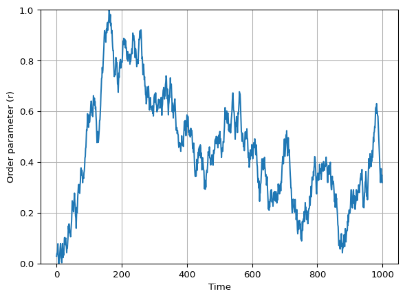

Vicsek Model
Interactive Animation
In this chapter I will guide you to build an interactive Vicsek animation in Matplotlib, one step at a time.
You already have a basic animation of particles moving (see the previous chapter). Now we will add: - an order parameter plot, - a noise diagnostic plot, - and sliders to explore the parameter space.
At the end, you should have a \(2 \times 2\) layout:
- Top-left: particle positions (with a tail).
- Top-right: order parameter over time.
- Bottom-left: sliders.
- Bottom-right: order parameter vs noise (a crude “phase diagram”) as you explore.
The imports remain the same as in the previous chapter, but now we will also import Slider from matplotlib.widgets to create interactive sliders.
I recommend making a new script named vicsek_animation_full.py for this chapter, so you can compare it with the simpler version from the previous chapter (and you don’t lose the other functional version). You can copy-paste the code from the previous chapter and then incrementally add the new features.
Keep it incremental: Run your code after each step. If something breaks, you only have one new thing to debug.
The Main Function
You will need to modify your run_simulation() function to include the new plots and sliders. The structure will be similar to the simplified version from the previous chapter, but with additional initialization for the order plot, noise plot, and sliders.
def run_simulation(dt: float = 1.0) -> None:
"""Run an interactive Vicsek animation (Matplotlib)."""
# TODO: choose defaults
num_boids =
noise_eta =
box_size =
radius_interaction =
v0 =
# Sliding window length for order parameter plot
ORDER_WINDOW = 3000
# Tail length for trajectory visualization
TAIL_LEN = 20
# TODO: initialize the state (xy, theta)
# store order parameter history
ls_order_param = []
# store explored noise->order mapping
dict_noise = {}
# We stop here for now.
return
Why a sliding window?
If you store the full time series, your plot and memory will grow forever.
A fixed-length list (window) gives you: - stable performance, - and a plot that focuses on recent behavior.
Create the Figure Layout
We want a large space for particles, and a smaller area for sliders + extra diagnostics.
Create the subplots and name the axes.
def make_figure():
# Create a 2x2 grid
fig, axs = plt.subplots(
2, 2,
figsize=(12, 8),
height_ratios=[4, 1], # top row larger than bottom row
)
ax_plane: Axes = axs[0, 0]
ax_order: Axes = axs[0, 1]
ax_sliders: Axes = axs[1, 0]
ax_noise: Axes = axs[1, 1]
# Sliders live in an empty axis
ax_sliders.axis("off")
return fig, ax_plane, ax_order, ax_sliders, ax_noiseWe are keeping the ax_plane name the same, as that is where the particles will be plotted. The new axes are ax_order for the order parameter plot, ax_sliders for the sliders, and ax_noise for the noise diagnostic plot.
Draw Particles
This stays the same as before.
Initialize the Order-Parameter Plot
The next plot will show the order parameter \(r\) over time.
We will update the line data at each animation frame, using the ls_order_param list to store the recent history of \(r\).
Create an empty line in ax_order and set labels/limits.
def init_order_plot(ax_order: Axes, order_window: int):
# TODO: create the line artist
# HINT: this is similar to how you created the particle artists,
# but with empty data
# TODO: set axes cosmetics
# limits, labels, grid
# TODO: return relevant variables
Solved
def init_order_plot(ax_order: Axes, order_window: int):
(line_order_param,) = ax_order.plot([], [])
ax_order.set_xlim(0, order_window - 1)
ax_order.set_ylim(0, 1)
ax_order.set_xlabel("Time")
ax_order.set_ylabel("Order parameter (r)")
ax_order.grid(True)
return line_order_paramInitialize the Noise Diagnostic Plot
In this plot we will track how the order parameter \(r\) changes as we explore different noise levels \(\eta\) with the slider. Visually, we expect to see a curve that starts near \(r=1\) at low noise, and drops towards \(r=0\) as noise increases. See Figure 2 for an example (using mock data).

To build this plot, we will maintain a dictionary dict_noise that maps noise levels to the recent average of the order parameter. Each time we update the animation, we will compute the recent average of \(r\) and update this dictionary with the current noise level. Then we will set the line data for the noise plot using the items in this dictionary.
[ r ]
Initialize an empty line (red markers).
def init_noise_plot(ax_noise: Axes):
# TODO: create the line artist
# TODO: set limits and labels (match your slider range)
# return::: {.callout-tip collapse=“true”} ## Solved
def init_noise_plot(ax_noise: Axes):
(line_noise,) = ax_noise.plot([], [], color="red", marker="o", linestyle="--")
ax_noise.set_xlim(0, 5)
ax_noise.set_ylim(0, 1)
ax_noise.set_xlabel("Noise (eta)")
ax_noise.set_ylabel("Order param (r)")
return line_noiseWrite the Animation Update Function
The core loop is expanded to include updates for the order parameter plot and noise diagnostic plot. The pipeline is as follows:
- advance the Vicsek dynamics by one step (
vicsek_equations). - update
xy_tail. - update the particle artists.
- update order-parameter history
ls_order_paramand its plot. - update the noise diagnostic
dict_noiseand its plot.
As you can see, steps 1-3 remain the same. Use this checklist:
You can follow the structure of the update_animation function below, which includes comments for each step.
def update_animation(frame: int):
nonlocal xy, xy_tail, theta, noise_eta, v0, radius_interaction, box_size, dict_noise, ls_order_param
# TODO: advance the Vicsek equations
# TODO: update the tail tensor
# TODO: update the particle artists with set_data
# TODO: update the order parameter history and plot
# TODO: compute a recent average and update dict_noise
# TODO: update the noise diagnostic plot with set_data
return (plt_particles, plt_current, line_order_param, line_noise)Keep the function update_animation inside run_simulation so it can access the state variables with nonlocal.
Solution: Full
update_animation()
def update_animation(frame: int):
nonlocal \
xy, \
xy_tail, \
theta, \
noise_eta, \
v0, \
radius_interaction, \
box_size, \
dict_noise, \
ls_order_param
xy, theta = vicsek_equations(
xy,
theta,
v0=v0,
dt=dt,
radius_interaction=radius_interaction,
box_size=box_size,
noise=noise_eta,
)
# Update tails
xy_tail = np.roll(xy_tail, shift=-1, axis=2)
xy_tail[:, :, -1] = xy
plt_particles.set_data(xy_tail[0].flatten(), xy_tail[1].flatten())
plt_current.set_data(xy[0], xy[1])
# Update order parameter
ls_order_param.append(vicsek_order_parameter(theta))
ls_order_param = ls_order_param[-ORDER_WINDOW:]
x_vals = np.arange(len(ls_order_param))
line_order_param.set_data(x_vals, ls_order_param)
# Average the last ORDER_WINDOW//3 values to get the order parameter (similar to Couzin)
order_param = np.mean(ls_order_param[-ORDER_WINDOW // 3 :])
dict_noise[noise_eta] = order_param
dict_noise = dict(sorted(dict_noise.items()))
if dict_noise:
line_noise.set_data(*zip(*dict_noise.items()))
else:
line_noise.set_data([], [])
return (plt_particles, plt_current, line_order_param, line_noise)Create the Animation Object
This stays the same as before.
Add Sliders
We want sliders for:
- Number of boids \(N\) (special: requires reinitializing particles).
- Interaction radius \(r\).
- Noise \(\eta\).
- Speed \(v_0\).
- Box size \(L\).
Create Slider Axes
We will create little inset axes inside ax_sliders:
def make_slider_axes(ax_sliders: Axes):
ax_sliders.axis("off")
ax_num_boids = ax_sliders.inset_axes([0.0, 1.2, 0.8, 0.1])
ax_radius_interaction = ax_sliders.inset_axes([0.0, 1.0, 0.8, 0.1])
ax_noise_eta = ax_sliders.inset_axes([0.0, 0.8, 0.8, 0.1])
ax_v0 = ax_sliders.inset_axes([0.0, 0.6, 0.8, 0.1])
ax_box_size = ax_sliders.inset_axes([0.0, 0.4, 0.8, 0.1])
return ax_num_boids, ax_radius_interaction, ax_noise_eta, ax_v0, ax_box_sizeCreate the Slider Widgets
Matplotlib’s Slider lives in matplotlib.widgets. Import it and create the sliders.
from matplotlib.widgets import Slider
def make_sliders(
*,
ax_num_boids,
ax_radius_interaction,
ax_noise_eta,
ax_v0,
ax_box_size,
num_boids: int,
radius_interaction: float,
noise_eta: float,
v0: float,
box_size: float,
):
# TODO: define the sliders with appropriate ranges and initial values
return slider_num_boids, slider_radius_interaction, slider_noise_eta, slider_v0, slider_box_sizeSlider Callbacks
We need two callbacks:
- A general callback that updates parameters without reinitializing particles.
- A special callback for
num_boidsthat reinitializes the system and updates the tail tensor.
Implement both callbacks and connect them with on_changed.
def connect_slider_callbacks(
*,
ani,
slider_radius_interaction,
slider_noise_eta,
slider_v0,
slider_box_size,
slider_num_boids,
ax_plane: Axes,
):
# This function will depend on your state variables.
# The simplest approach: define the callbacks INSIDE run_simulation
# so they can use `nonlocal` to access xy, theta, etc.
...
Tip: pause the animation during parameter changes
Inside a callback:
ani.event_source.stop()
# update parameters / reinit
ani.event_source.start()This reduces glitches while you resize arrays or change plot limits.
Full Script
At this point you have built every piece.
Below is a sample of how your run_simulation function might look with all the pieces assembled.
Solution: Full
run_simulation()
def run_simulation(dt: float = 1.0) -> None:
# Parameters
num_boids = 100
noise_eta = 0.5
box_size = 10.0
radius_interaction = 1.0
v0 = 0.03
# Initialize state
xy, theta = initialize_particles(num_boids, box_size)
# Order parameter history and noise diagnostic
ls_order_param = []
dict_noise = {}
# Create figure and axes
fig, ax_plane, ax_order, ax_sliders, ax_noise = make_figure()
# Initialize plots
xy_tail, plt_particles, plt_current = init_particles_plot(ax_plane, xy, box_size, tail_len=20)
line_order_param = init_order_plot(ax_order, order_window=3000)
line_noise = init_noise_plot(ax_noise)
# Create sliders
ax_num_boids, ax_radius_interaction, ax_noise_eta, ax_v0, ax_box_size = make_slider_axes(ax_sliders)
slider_num_boids, slider_radius_interaction, slider_noise_eta, slider_v0, slider_box_size = make_sliders(
ax_num_boids,
ax_radius_interaction,
ax_noise_eta,
ax_v0,
ax_box_size,
num_boids,
radius_interaction,
noise_eta,
v0,
box_size,
)
# Define the animation update function (see previous step for details)
def update_animation(frame: int):
...
# Create the animation object
ani = animation.FuncAnimation(fig, update_animation, interval=0, blit=True)
# Connect slider callbacks
connect_slider_callbacks(
ani=ani,
slider_radius_interaction=slider_radius_interaction,
slider_noise_eta=slider_noise_eta,
slider_v0=slider_v0,
slider_box_size=slider_box_size,
slider_num_boids=slider_num_boids,
ax_plane=ax_plane,
)
plt.show()The full script with all functions defined is available in vicsek_animation.py in the repo. You can run it and experiment with the sliders to see how the Vicsek model behaves under different conditions.
Checklist (Debugging)
If your animation is blank:
- Did you return the artists in
update_animation? - Did you set axis limits (
set_xlim,set_ylim)? - Are
xyandthetaupdated each frame? - Are you calling
plt.show()at the end ofrun_simulation()? - Are you calling
run_simulation()at the end of your script?
If sliders do nothing:
- Did you call
slider.on_changed(...)? - Are you updating the right variables (
nonlocal)?
Optional Extensions
- Color by heading: map
thetato a colormap for the current points. - Quiver plot: show velocity vectors for a subset of particles.
- Pause button: add a Matplotlib
Buttonwidget.